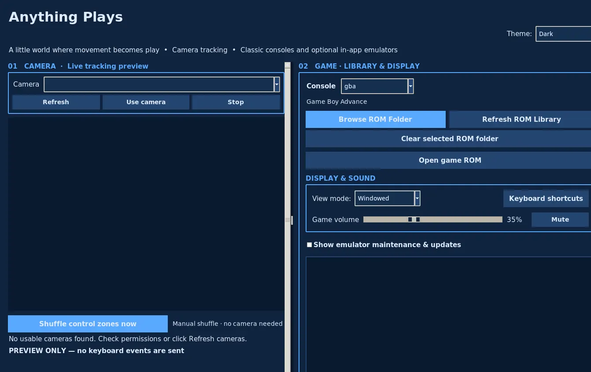

Turn movement into input.
Select a color and let a real-world object move through control zones. Tracking stays inside the app, without system-wide keyboard injection.
What if a toy, a hand, or even a fish could play a video game? Anything Plays transforms real-world movement into game controls using a webcam, a customizable control grid, and embedded emulators.
PUBLIC STABLE RELEASE · Anything Plays 3.1.1 adds safer camera and controller recovery, more reliable saves and ROM libraries while retaining Stream Mode. Free, noncommercial downloads for all four desktop targets.
01 / THE EXPERIENCE
Traditional controllers are optional. Anything Plays lets a camera recognize movement and translates it to precise, configurable game inputs.
Select a color and let a real-world object move through control zones. Tracking stays inside the app, without system-wide keyboard injection.
Arrange, resize, shuffle, and remap button zones. Save independent profiles for each console.
Use keyboard controls in the embedded game window. Pause object tracking whenever you want.
02 / NEW IN 3.1
Stream Mode gives OBS a single beautiful window to capture. See the game and the annotated camera in a DS-inspired layout, with its own adjustable borders, theme and screen sizes. The streaming controls stay off-camera.
MADE FOR LIVE PLAY
The game and camera are mirrored from the running app. No second camera, no second emulator and no additional device permissions.
The graphic is an original illustration of the output layout, not a captured game or camera feed. External emulator video may require a separate OBS source. Audio capture is configured in OBS.
Explore Stream Mode03 / INTERACTIVE CONCEPT
Here’s the basic idea behind camera zones. Move the sample tracker across this interactive grid or tap a zone to see which game button would activate.
This is an illustrative browser interaction, not the desktop application or a live emulator. The actual app uses your webcam, configurable detection, and native game cores.
04 / REAL DESKTOP APPLICATION
Anything Plays 3.0 brings Nintendo 64 and GameCube into the same desktop app as the handheld and classic console libraries. The Linux screenshot below shows the camera controls, ROM shelf, and per-console settings.

05 / THE GAME LIBRARY
Anything Plays 3.1.1 is publicly available with 18 offline console profiles powered by 11 original-source native emulator core families, including Nintendo 64 and GameCube. Game compatibility varies by computer.
You supply your own legally usable games. Anything Plays does not distribute commercial ROMs or BIOS files. Game compatibility depends on your machine and the specific title; see the published release notes.
06 / UNDER THE HOOD
Anything Plays is more than a concept. It is a real, modular desktop application with native emulation, performance tuning, safety boundaries, and cross-platform build automation.
Desktop user interface, themes, ROM libraries, input configuration, persistent console profiles and application lifecycle.
Camera capture, target-color detection, configurable control zones, and optional multi-object tracking.
Embedded game rendering, local gamepad signals, audio, and platform-specific lifecycle isolation. GameCube uses Dolphin Libretro.
Experimental accelerated GameCube display path with preview readback pacing. Real-world GPU performance remains under review.
Reproducible Windows, macOS, and Linux releases, native-source audit, platform tests, checksum verification, and source-first publishing.
Verified fixes, reproducible bugs, a public roadmap, and clear separation between stable releases and development builds.
07 / THE DEVELOPMENT ROADMAP
Stable 3.1.1 is released across four desktop targets with camera recovery, controller resilience and safer game saves. Dual-screen Stream Mode, themed bezels and controller mapping remain. Original native-source materials are included; real-device hardware testing continues.
A genuine second-ROM failure was reproduced on all four build platforms, fixed with safe native-core lifecycle handling, and re-tested over three consecutive launches per platform. Manual Apple Silicon ROM switching was confirmed.
Windows, Linux, and Apple Silicon were tested by the maintainer. The final Linux installer passed non-root launch and GameCube checks. New game and hardware combinations remain ongoing compatibility work.
LINUX ISSUE #25 ↗WINDOWS ISSUE #26 ↗Measure actual emulation FPS versus display preview FPS, improve input and frame pacing where safe, and test long running sessions on real GPUs without weakening native correctness.
GAMECUBE ISSUE #27 ↗Stable public installers, source archives and integrity checks are available. Continue validating real controllers, webcams, saved games, long sessions and platform compatibility.
VIEW 3.1 RELEASE ↗Proposed improvements are filed with problems to solve, validation criteria, and clear scope. They are not part of the current release commitment.
08 / GET HANDS ON
Anything Plays 3.1.1 is the public stable maintenance release for Windows x64, Linux x64, Apple Silicon and Intel Mac. It keeps the complete 18-console library and Stream Mode, and improves camera recovery, controller resilience and safe game saves. No commercial ROMs or proprietary console firmware are included.
CHOOSE YOUR COMPUTER
Locally installed, free for noncommercial use. A camera is optional for manual play. Real gamepad, webcam, retail-game save/audio and long-session compatibility have not been certified on all four physical host types. Separately licensed sources and notices accompany the release.
READ HARDWARE TESTING SCOPE ↗